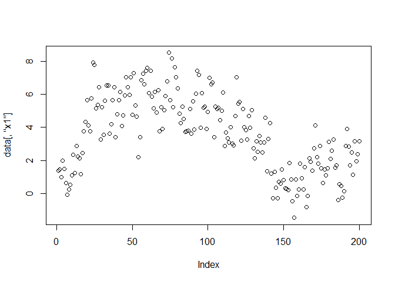
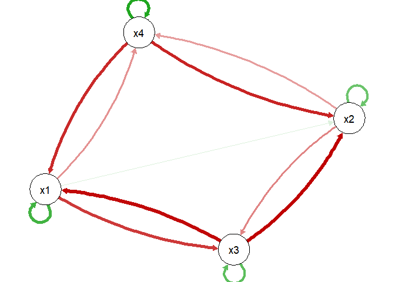
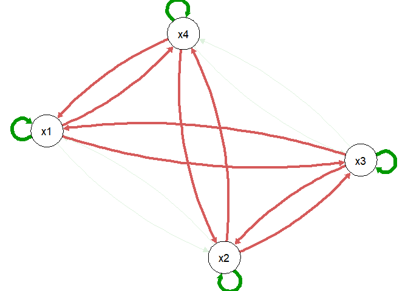
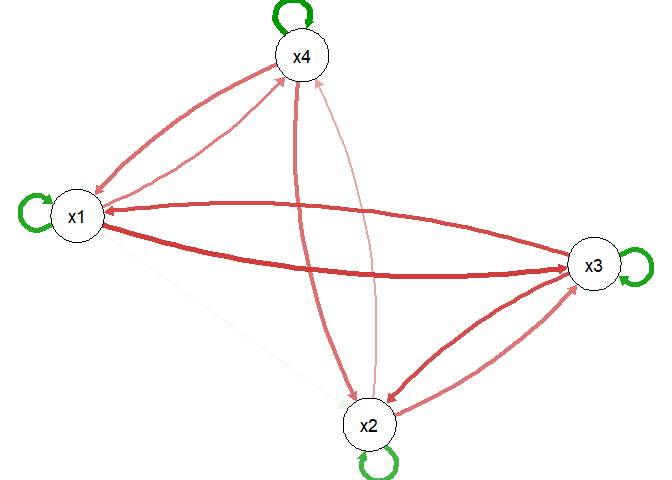

Estimate quadratic vector autoregression models with the strong hierarchy using the RAMP algorithm, compare the performance with linear models, and construct networks with partial derivatives.
Installation
You can install the development version of quadVAR from GitHub with:
# install.packages("devtools")
devtools::install_github("Sciurus365/quadVAR")Example

qV1 <- quadVAR(data, vars = c("x1", "x2", "x3", "x4"))
summary(qV1)
#> # A tibble: 6 × 5
#> Model Sumdf SumIC DiffIC Weight
#> <chr> <dbl> <dbl> <dbl> <dbl>
#> 1 NULL_model 0 3580. 1132. 1.96e-246
#> 2 AR 4 2775. 326. 1.83e- 71
#> 3 VAR 16 2544. 95.4 1.95e- 21
#> 4 VAR_full 16 2544. 95.4 1.95e- 21
#> 5 quadVAR 28 2449. 0 1.00e+ 0
#> 6 quadVAR_full 56 2519. 70.1 5.95e- 16
coef(qV1)
#> model effect estimate
#> x1 x1 1.6273
#> x1 x3 0.0329
#> x1 x4 -0.0751
#> x1 x1:x1 -0.1019
#> x1 x1:x3 -0.1177
#> x1 x1:x4 -0.1065
#> x1 x3:x3 -0.0104
#> x1 x4:x4 0.0157
#> x2 x1 0.2520
#> x2 x2 1.4055
#> x2 x3 0.4096
#> x2 x4 0.0446
#> x2 x1:x3 -0.0760
#> x2 x2:x2 -0.0863
#> x2 x2:x3 -0.0822
#> x2 x2:x4 -0.1158
#> x2 x3:x3 -0.0565
#> x3 x1 -0.1685
#> x3 x2 0.1035
#> x3 x3 1.6050
#> x3 x1:x3 -0.0769
#> x3 x2:x2 0.0018
#> x3 x2:x3 -0.1377
#> x3 x3:x3 -0.1004
#> x4 x1 0.0675
#> x4 x2 -0.1798
#> x4 x4 0.8196
#> x4 x1:x4 -0.1138
plot(qV1)
#> ℹ The quadVAR model, being nonlinear, generates a network meaningful only for
#> specific variable values. If values are unspecified, the linearization/the
#> plot defaults to 0 (i.e., the mean values of all variables if
#> `value_standardized = TRUE`), but this is not a complete description of the
#> model estimation and may not be meaningful in all cases.
#> This message is displayed once every 8 hours.
# Compare the estimation with the true model
plot(true_model_4_emo())
plot(qV1, value = rep(2.80, 4), value_standardized = FALSE, layout = plot(true_model_4_emo())$layout)